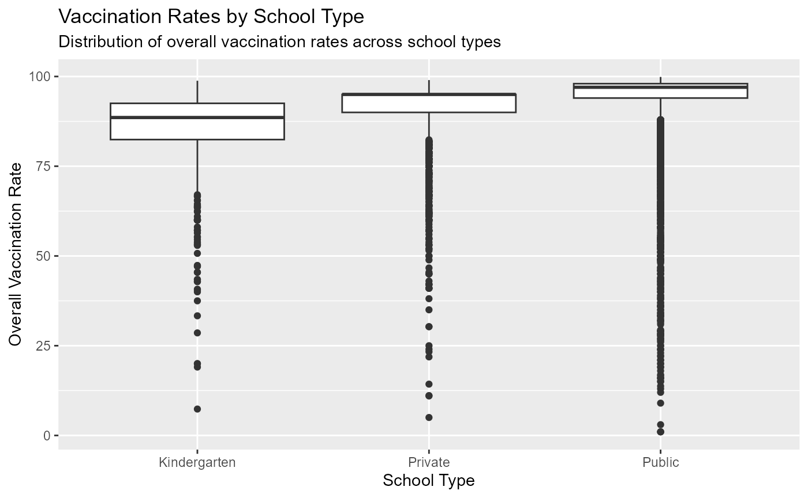
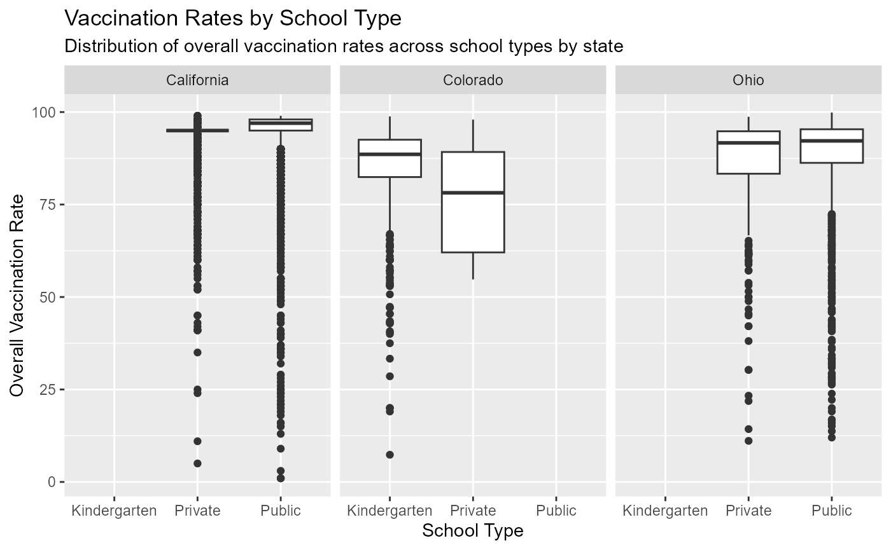
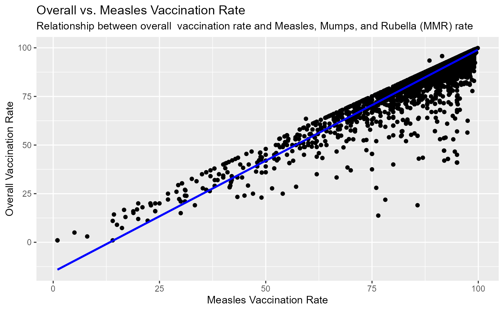

Topic: vaccination rates
This analysis aims to explore vaccination rates in the United States. In particular, measles specific and overall vaccination rates are compared to get a proxy of whether vaccination rates tend to differ depending on the specific vaccine. Furthermore, different state and school types are tested as predictors for vaccination rates.
The data
The data comes the Measles tidytuesday. It contains immunization rate data for schools across the U.S., as compiled by The Wall Street Journal. The dataset includes the overall and MMR-specific vaccination rates for 46,412 schools in 32 states.
Data Dictionary
A data dictionary can be found here
Loading Data
## Helpful functions
# Function to check and create the 'data' directory if it doesn't exist
check_and_create_data_directory <- function() {
data_dir <<- file.path(dirname(getwd()),"data")
if (!file.exists(data_dir)) {
dir.create(data_dir)
}
}
# Function to save data
save_data <- function() {
data_path <- file.path(data_dir, "tuesdata.rds")
# Save data only if it hasn't been saved before
if (!file.exists(data_path)) {
data <- tidytuesdayR::tt_load('2020-02-25')
saveRDS(data, data_path)
}
}
# Function to read data after creating directory and saving data, as appropriate
load_data <- function() {
check_and_create_data_directory()
save_data()
data_path <- file.path(data_dir, "tuesdata.rds")
data <- readRDS(data_path)
return(data)
}
# Install the tidytuesdayR package if not already installed
if (!requireNamespace("tidytuesdayR", quietly = TRUE)) {
install.packages("tidytuesdayR")
}
# Load the tidytuesdayR package
library(tidytuesdayR)
# Read data
data <- load_data()
measles_data = data$measlesData Wrangling
## Warning: package 'broom' was built under R version 4.2.3## Warning: package 'ggplot2' was built under R version 4.2.3##
## Attaching package: 'lubridate'## The following objects are masked from 'package:base':
##
## date, intersect, setdiff, union##
## Attaching package: 'dplyr'## The following objects are masked from 'package:stats':
##
## filter, lag## The following objects are masked from 'package:base':
##
## intersect, setdiff, setequal, union
library(purrr)
# Data wrangling: filter out NA if present
if(some(measles_data$type,is.na)||some(measles_data$mmr,is.na)||some(measles_data$overall,is.na)){
measles_data <- measles_data %>%
filter(!is.na(type), !is.na(mmr), !is.na(overall))
}
# Create a variable for total exemptions
measles_data <- measles_data %>%
mutate(total_exemptions = xrel + xmed + xper)
# Define a function to check if any value is 0-100
is_perc <- function(x) any(x<=100 && x>=0)
# Apply the condition using purrr::map
if(!(every(measles_data$overall, is_perc)&&every(measles_data$overall, is_perc))) {
measles_data <- measles_data %>% filter(overall<100,overall>0,mmr<100,mmr>0)
}Analysis and Visualizations
First, let us look at how vaccination rates vary across different school types.
# Summary statistics by school type
summary_by_type <- measles_data %>%
rename(School_type=type) %>%
group_by(School_type) %>%
summarize(Average_Measles_Vaccination_Percentage = mean(mmr),
Average_Overall_Vaccination_Percentage= mean(overall))
print(summary_by_type)## # A tibble: 3 × 3
## School_type Average_Measles_Vaccination_Percentage Average_Overall_Vaccinat…¹
## <chr> <dbl> <dbl>
## 1 Kindergarten 89.7 85.2
## 2 Private 92.4 90.6
## 3 Public 95.8 94.5
## # ℹ abbreviated name: ¹Average_Overall_Vaccination_Percentage
# Visualization: Vaccination rates by school type
plot_vaccination_by_type <- ggplot(measles_data%>% select(type,overall), aes(x = type, y = overall)) +
geom_boxplot() +
labs(title = "Vaccination Rates by School Type",
subtitle = "Distribution of overall vaccination rates across school types",
x = "School Type",
y = "Overall Vaccination Rate")
print(plot_vaccination_by_type)
From the above it seems that avergae vaccination rates do vary by school type with them being highest in public schools. In each group, the vaccination percentage distribution is severely left-skewed with some schools having significantly lower vaccination rates than average.
Let us repeat the same boxplot state-by-state
plot_vaccination_by_type_state <- ggplot(measles_data, aes(x = type, y = overall)) +
geom_boxplot() +
labs(title = "Vaccination Rates by School Type",
subtitle = "Distribution of overall vaccination rates across school types by state",
x = "School Type",
y = "Overall Vaccination Rate") +
facet_wrap(~ state)
print(plot_vaccination_by_type_state) The data by state is limited but it still appears the public schools have higher vaccination percentage than prvate schools.
From the first table it also appeared that measles vaccination percentage and overall vaccination percentage are correlated. Let us further explore
# Linear regression model to predict overall vaccination rate based on MMR rate
model <- lm(overall ~ mmr, data = measles_data)
# Tidy the model results
tidy_results <- tidy(model)
print(tidy_results)## # A tibble: 2 × 5
## term estimate std.error statistic p.value
## <chr> <dbl> <dbl> <dbl> <dbl>
## 1 (Intercept) -15.2 0.327 -46.6 0
## 2 mmr 1.14 0.00343 334. 0The regression results above strongly support the positive correlation between measles vaccination percentage and overall vaccination percentage, as is also illustrated below
# Visualization: Scatter plot of overall vs. Measles vaccination rate
plot_mmr_vs_overall <- ggplot(measles_data, aes(x = mmr, y = overall)) +
geom_point() +
geom_smooth(method = "lm", se = FALSE, color = "blue") +
labs(title = "Overall vs. Measles Vaccination Rate",
subtitle = "Relationship between overall vaccination rate and Measles, Mumps, and Rubella (MMR) rate",
x = "Measles Vaccination Rate",
y = "Overall Vaccination Rate")
print(plot_mmr_vs_overall)## `geom_smooth()` using formula = 'y ~ x'
Please, note that while the regression line is still a tool to see the relationship between the two rates, in order to use for predictions it would have been more appropriate to build a model where “y” values are constrained between 0 and 100.
Now, let us use the lme4 package to fixed a linear mixed-effect model that also considers state as predictor. Let us also extract the random effect associated to each state
# Fit a linear mixed-effects model
mixed_model <- lmer(overall ~ mmr + (1 | state), data = measles_data)
print(mixed_model)## Linear mixed model fit by REML ['lmerMod']
## Formula: overall ~ mmr + (1 | state)
## Data: measles_data
## REML criterion at convergence: 90884.88
## Random effects:
## Groups Name Std.Dev.
## state (Intercept) 1.361
## Residual 3.216
## Number of obs: 17561, groups: state, 3
## Fixed Effects:
## (Intercept) mmr
## -14.263 1.125
# Extract random effects
random_effects <- ranef(mixed_model)
random_effects## $state
## (Intercept)
## California 0.9759197
## Colorado -1.5514923
## Ohio 0.5755726
##
## with conditional variances for "state"We can interpret the random effects ($state (Intercept) above) as the average difference between that state’s overall vaccination rate and the average overall vaccination rate. We can rank in order of overall vaccination percentage: California, Ogio, Colorado.
TA Help
6 functions from dplyr, tidyr, lubridate, stringr, or forcats: - dplyr::filter - dplyr::mutate - dplyr::group_by - dplyr::summarise - dplyr::select - dplyr::rename 2 functions from purrr: - some - every 3 functions from ggplo2 + faceting: - geom_boxplot - geom_smooth - geom_point - facet_wrap 2 functions from lme4: - lmer - ranef